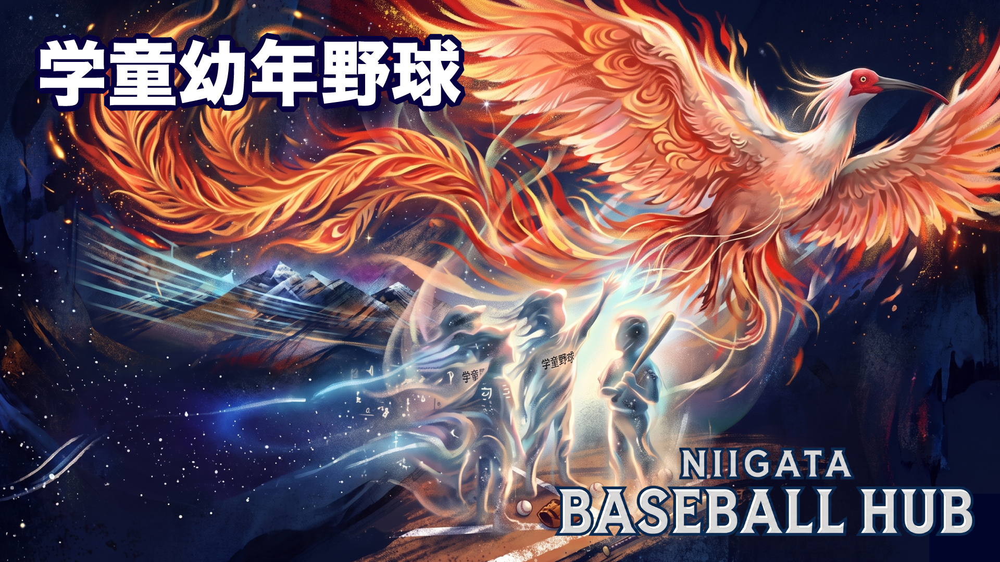

👦
ELEMENTARY SCHOOL BASEBALL
学童野球
新潟県内の少年野球チーム一覧と大会情報。新潟市野球連盟・がたQ掲載チームを地区別にまとめています。
300+
掲載チーム数
エリア別チーム一覧
TEAMS BY AREA
新潟市 中央区
12チーム
新潟中央シーホークス
山潟レッズ
鳥屋野ペガサス
上山ブルースターズ
女池ロードーズ全国出場1回
新潟IBC
南万代エンジェルス
舟栄ジャリナーズ
紫所ビクトリーズ
沼垂ミラーズベースボールクラブ
桜が丘ビッグウエーブズ
BN野球クラブ
新潟市 北区
13チーム
J.OCEANS.BASEBALL CLUB
マウント小針野球少年団
新坂スピリッツ全国出場1回
佐潟レイカーズ
立仏レッドキャップス
西内野フレンズ
坂井輪ブルードラゴンズ
東青山ブルーソックス
黒埼ジュニアベースボールクラブ
青山あらなみ野球少年団全国出場2回
葛塚フェニックス
OHファイターズ
松浜カッツ
新潟市 秋葉区・西蒲区
15チーム
荻川少年スポーツクラブ
新津三小ドラゴンファイターズ
小須戸野球スポーツ少年団
新津ブルーサンダーズ
新津東ジュニアベースボールクラブ
金津少年野球部
新潟小合レッドナイト
潟東少年野球クラブ
漆山少年ファイターズ
西川ジュニアベースボールクラブ
巻北ベースボールクラブ
浜っ子ライオンズ
岩室クラブジュニア
中之口ドリームズ
巻ベースボールクラブ全国出場1回
長岡市
44チーム
あおし野球クラブ
青葉台ベースボールクラブ
赤城BC
新町クラブスポーツ少年団
石坂メッツ
小国スターズ
川口ファイターズ
神田よつば野球部
希望BC
黒条わかばBC
けいせつ野球クラブ
江陽フェニックス合同チーム
さつきスポーツ少年団
新組ホワイトソックス
信江スポーツ少年団
信条フェニックス
セントラルジュニアBC
TSドジャース
TMナインオールスターズ合同チーム
栃尾オールスターズ合同チーム
栃尾ジュニアBC
長岡WEST
長岡北BC
長岡南ジュニア
長岡南部スリースターズ
南部レジェンズ合同チーム
八幡野球クラブ
日越ブルースカイ
BLUE SOUTH合同チーム
前川マッハーズ
みつば少年野球団
MITSUWAフェニックス
宮内ジュニアBC
宮内スタリオンズ合同チーム
みゆきスポーツ少年団
むつなみBC
やまなみイースト
やまなみグーニーズ
与板たちばな野球クラブ
若木BC
若草野球スポーツ少年団
若獅子スポーツ少年団
和島BC
出雲崎スカイヤーズ
寺泊マリンスターズ
三条市
7チーム
三条ノースリバー全国出場
月岡少年野球スポーツ少年団
大崎少年野球スポーツ少年団
旭スポーツ少年団
西小野球団隼クラブ
スーパーキッズ裏館
三条ジュニアビクトリー
下越地区（新発田・村上・阿賀野 他）
10チーム+
新発田野球スポーツ少年団
村上リトルファイターズ
黒川サンダース
オール阿賀野ジュニア
胎内フレンズJr
聖籠インパルス
五泉フェニックス
旭スポーツ少年団（胎内）
中越（見附・魚沼・十日町 他）
15チーム+
今町ふたば野球スポーツ少年団見附市
くずはスポーツ少年団見附市
見附ドジャース見附市
見附南JBC見附市
十日町ジュニアベースボールクラブ十日町市
川西クラブ十日町市
下条スピリッツ十日町市
津南フェニックス津南町
中之島イーグルス長岡市
※ チーム情報は がたQ（niigata-baseball.com） および新潟市野球連盟公式サイトを参照しています。最新情報は各公式ページでご確認ください。
大会情報
TOURNAMENTS
主要大会
全国・県レベルの大会
高円宮賜杯 全日本学童軟式野球大会（マクドナルドトーナメント）
全国学童軟式野球大会 新潟県予選
読売旗争奪少年野球大会（新潟大会）
新潟県学童軟式野球選手権大会（秋季）
オイシックス新潟アルビレックスBCカップ
ローカル大会
地区・市区町村の大会
SDGs新潟地区学童軟式野球大会
ライオンズクラブ旗 長岡市学童野球大会
三條新聞社杯争奪 県央地域選抜少年野球大会
五泉ドリーム杯親善少年野球大会
新潟球童会旗争奪 球童トーナメント学童野球大会